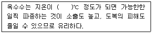
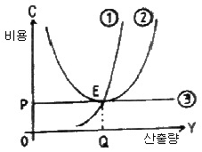

축산기사 (2011-03-20 기출문제)
1과목: 가축육종학
1. 홀스타인종의 유량을 조사한 다음 어미소와 딸소가 함께 조사된 것들만 골라 어미소에 관한 딸소의 회귀 계수(b)를 계산하였더니 b = 0.15이었다. 이 결과로 유전력을 추정한다면 유량에 관한 유전력을 얼마라고 할 수 있겠는가?
- 0.15
- 0.25
- 0.30
- 0.45
(정답률: 83%)

2. 한우의 일당증체량에 대하여 개체선발을 한 결과 선발차는 수컷에서 0.12kg이었고 암컷에서 0.08kg이었다. 이 집단에 있어 일당증체량의 유전력이 0.3일 때 이 선발에서 기대되는 유전적 개량량의 이론치는?
- 0.01 kg
- 0.02 kg
- 0.03 kg
- 0.04 kg
(정답률: 76%)
3. 비대립유전자간의 상호작용에 해당하지 않은 것은?
- 보족유전자작용
- 상위유전자작용
- 동의유전자작용
- 한성유전자작용
(정답률: 66%)
4. 젖소의 경제 형질 중 유전력이 가장 높은 것은?
- 비유량
- 유지율
- 생산수명
- 번식효율
(정답률: 75%)
5. 돼지의 경제 형질 중 유전력이 가장 높은 형질은?
- 도체장
- 등지방 두께
- 일당 증체량
- 사료 효율
(정답률: 59%)
6. 질적형질에 대한 설명으로 옳은 것은?
- 여러 유전자의 영향을 받는다.
- 환경의 영향은 미약하다.
- 개개의 유전자효과는 비교적 작다.
- 기구를 이용한 측정이 가능하다.
(정답률: 50%)
7. 젖소 산유기록의 통계적 보정에 있어서 그 대상이 되지 않는 것은?
- 착유일수
- 1일 착유회수
- 암소의 분만시 연령
- 숫소의 연령
(정답률: 86%)
8. 유전인자의 다면작용(pleiotropism)이란?
- 1개의 유전자가 다수의 형질에 관여하는 현상
- 1개의 형질에 다수의 유전자가 관여하는 현상
- 다수 유전자 중에서 특정형질에만 특정유전자가 관여하는 현상
- 다수 유전자가 복합적으로 원래 유전자 작용이 아닌 특수한 작용을 하는 현상
(정답률: 81%)
9. 한우의 후대검정에 의하여 선발되는 씨수소의 선발지수에 포함되지 않는 형질은?
- 도체중
- 배최장근단면적
- 일당증체량
- 근내지방도
(정답률: 50%)
10. 대립유전자간에 있어 유전자형의 변화에 따라 표현형 능력에 상승효과를 나타내는 유전자작용을 무엇이라 하는가?
- 비상가적 작용
- 상가적 작용
- 선발 효과
- 평균 효과
(정답률: 82%)
11. 브로일러 생산을 위한 이상적인 종계의 교배체계는?
- 육용종(♀) × 육용종(♂)
- 육용종(♀) × 겸용종(♂)
- 겸용종(♀) × 육용종(♂)
- 산란종(♀) × 육용종(♂)
(정답률: 68%)
12. 육우인 쇼트혼(Shorthorn)종의 피모색 유전에서 적 색소와 백색소를 교배시킨 경우 F2에서 적색 : 조모색 : 백색의 분리비가 바르게 나타나 있는 것은?
- 1 : 2 : 1
- 1 : 3 : 0
- 0 : 3 : 1
- 3 : 0 : 1
(정답률: 85%)
13. 선조의 능력을 기준으로 한 선발 방법을 무엇이라 하는가?
- 개체선발
- 가계선발
- 혈통선발
- 가계내선발
(정답률: 76%)
14. 유전자형이 알려져 있지 않은 개체의 유전자형을 알기 위하여 실시하는 검정 교배에 대한 설명으로 옳지 않은 것은?
- 검정 대상 개체를 암컷으로 하는 것이 보다 효과적이다.
- 임신기간과 성 성숙이 빠른 동물에서 보다 효과적이다.
- 불량 열성 형질을 제거하는데 주로 이용된다.
- 이형 접합체를 찾아내기 위하여 주로 이용된다.
(정답률: 62%)
15. 두 유전자 A와 B사이의 교차율이 10%이면, AB/ab와 ab/ab교배에서 생산된 자손 중에서 가장 빈도가 높은 유전자형은?
- AB/ab
- AB/Ab
- Ab/ab
- ab/ab
(정답률: 54%)
16. 한가지 형질이 일정기준의 개량량(改良簗)에 도달할 때까지 선발하고 그 다음에는 제2, 제3의 형질로 넘어가는 형태의 선발방법은?
- 독립도태법(Independent culling method)
- 순차적선발법(Tandem method)
- 선택지수법(Selection index method)
- 혈통선발법(Pedigree selection)
(정답률: 88%)
17. 유전자 빈도를 변화시키는 요인이 아닌 것은?
- 선발
- 무작위 교배
- 돌연 변이
- 유전적 부동
(정답률: 58%)
18. 다음 중 가축육종의 목표로 적합하지 않은 것은?
- 축산물의 두당 생산량 증가
- 축산물의 효율적인 생산
- 축산물의 품질 향상
- 가축의 세대간격을 장기화
(정답률: 90%)
19. 근교계수가 0이란 어떤 의미를 나타내는가?
- 개체의 부친과 모친 간에 전혀 혈연관계가 없다.
- 개체의 부친과 모친이 전형매 간의 관계이다.
- 개체의 부친과 모친이 반형매 간의 관계이다.
- 개체의 부친과 모친이 부남 간의 관계이다.
(정답률: 83%)
20. 사람의 ABO식 혈액형은 복대립 유전자인 IA, IB, IO의 지배를 받으며 이들의 우열 관계는 IA와 IB간에는 우열이 없는 공동우성으로 작용하며 IO는 IA와 IB 모두에 있어 열성으로 작용한다. 어떤 집단의 혈액형을 조사한 결과 A형이 39%, B형이 24%, O형이 25%, AB형이 12%이었다고 하면 IA, IB, IO 유전자 각각의 빈도는?
- 0.2, 0.3, 0.5
- 0.3, 0.3, 0.4
- 0.3, 0.2, 0.5
- 0.4, 0.3, 0.3
(정답률: 60%)
2과목: 가축번식생리학
21. 정자의 첨체에 함유된 효소의 종류가 아닌 것은?
- 이노시톨((inositol)
- 하이알루로니다이제(Hyaluronidase)
- 아크로신(Acrosin)
- 칼페인 Ⅱ(Calpain Ⅱ)
(정답률: 50%)
22. 인공수정을 실시한 소에서 배반포기의 수정란을 채취하려고 한다면 언제 어느 부위에서 채취하여야 하는가?
- 수정 후 7일경 난관
- 수정 후 5일경 난관
- 수정 후 5일경 자궁
- 수정 후 7일경 자궁
(정답률: 59%)
23. 젖소 착유시 젖이 나오기 시작한지 가능한 10분 안에 착유를 끝내야 하는 이유는?
- 착유자극이 약해지기 때문
- 농후 사료를 다 먹어 치웠기 때문
- 지루하게 느꼈기 때문
- 옥시토신(oxytocin)의 분비량이 감소
(정답률: 72%)
24. 정소에서 정자가 만들어질 때 발생중인 생식세포에 영양 물질을 공급하고 아울러 대사산물을 배설하는 세포는?
- 지지세포(sertoli cell)
- 간질세포(leydig cell)
- 기저막세포
- 배아상피세포
(정답률: 64%)
25. 호르몬 중 유선관계(duct system)의 발달에 가장 중요한 것은?
- Progesterone
- Estrogen
- Androgen
- Prostaglandin F2a
(정답률: 64%)
26. 소를 인공수정하기 위하여 채취한 정액의 량은 5ml, ml당 정자수는 10억 개, 생존율이 80% 일 때, 1회 주입정자수를 20,000,000개로 한다면 몇 두의 암소에 인공수정 할 수 있는가?
- 100두
- 200두
- 300두
- 400두
(정답률: 57%)
27. 정자완성 과정 중 수피상판(포켈상판:manchette)이 나타나는 시기는?
- 골지기
- 두모기
- 첨체기
- 성숙기
(정답률: 53%)
28. 호르몬을 처리하여 다배란을 유도시킨 젖소로부터 수정란을 비외과적으로 채취할 때 가장 적당한 시기의 수정란 발달단계와 장소는?
- 수정직전, 난관
- 수정직후, 자궁
- 착상직전, 자궁
- 착상직후, 난관
(정답률: 57%)
29. 다음 중 임신기간이 가장 짧은 동물은?
- 젖소
- 돼지
- 면양
- 말
(정답률: 71%)
30. 가축 인공수정의 특징 설명으로 틀린 것은?
- 종모축의 사양관리에 필요한 부담을 경감시킨다.
- 종모축의 유전력을 조기에 판정할 수 있다.
- 종모축의 이용효율을 증대시킴으로써 가축개량을 현저하게 촉진할 수 있다.
- 숙련된 기술자와 특별한 시설이 필요 없다.
(정답률: 85%)
31. 성선호르몬인 안드로겐((Androgen)의 생리작용이 아닌 것은?
- 태아의 성분화
- 웅성부생식기관의 발달과 기능발현
- 2차 성징 발현
- 수정란의 착상과 임신유지
(정답률: 63%)
32. 난소에서 난포가 배란된 위치에 처음으로 생기는 것은?
- 백체
- 황체
- 난구
- 과립막
(정답률: 64%)
33. 난자가 난관을 통과하는데 소요되는 시간이 가장 긴 것은? (단, 난관의 길이와는 상관관계가 없다.)
- 소
- 말
- 면양
- 개
(정답률: 60%)
34. 암가축의 난소에서 성숙, 발달하는 여러 개의 난포 중 배란 직전에 가장 크게 발달한 난포는?
- 그라이프난포
- 포상난포
- 성장난포
- 원시난포
(정답률: 73%)
35. 정자형성 과정 중 X-정자와 Y-정자는 어느 과정에서 형성되는가?
- 유사분열과정
- 제1성숙분열과정
- 제2성숙분열과정
- 형태변성과정
(정답률: 61%)
36. 소, 면양 및 돼지에서 초기배의 약 25~40%는 수정과 착상의 말기에서 소실된다. 이와 같은 초기배치사의 원인으로 틀린 것은?
- 발정호르몬과 황체호르몬의 불균형으로 인해 초기 배 수송의 촉진 또는 지연으로 생긴다.
- 소, 면양 및 말에서 비유기중에 초기배치사가 발생되는 수가 많다.
- 특히 돼지의 경우 초기배의 높은 사망율은 모축의 연령 때문에 일어나는 경우가 많다.
- 모체의 영양과 초기배치사는 무관하다.
(정답률: 79%)
37. FSH의 생리작용에 해당하는 것은?
- 난포발육자극
- 황체발육자극
- 태아발육자극
- 태반발육자극
(정답률: 75%)
38. 프로게스테론(progesterone)의 작용이 아닌 것은?
- 착상
- 분만
- 임신유지
- 유선자극
(정답률: 68%)
39. 포유동물에 있어서 프로스타글란딘(PGF2a)의 기능은?
- 2차 성징의 발현
- 임신의 유지
- 황체의 퇴행
- 난자의 수송
(정답률: 78%)
40. 암컷의 자궁형태가 축종별로 바르게 연결되지 않은 것은?
- 중복자궁 - 설치류
- 쌍각자궁 - 돼지
- 분열자궁 - 소
- 단일자궁 - 산양
(정답률: 62%)
3과목: 가축사양학
41. 반추위 내에서 미생물에 의한 섬유소의 최종 분해물은?
- 포도당
- 글리세롤
- 휘발성 지방산
- 아미노산
(정답률: 63%)
42. 단위가축(돼지, 닭)에서 가소화에너지와 대사에너지의 차이는 주로 어디에 기인하는가?
- 똥으로 인한 손실
- 오줌으로 인한 손실
- 암모니아 가스로 인한 손실
- 열량증가로 인한 손실
(정답률: 54%)
43. 다음 중 간문액으로 흡수되는 지방은?
- 긴 사슬지방
- 짧은 사슬지방
- 팔미틱산(palmitic acid)
- 스테아릭산(stearic acid)
(정답률: 56%)
44. 가축에 있어서 필수 아미노산에 속하지 않는 것은?
- Lysine
- Methionin
- Valine
- Tyrosine
(정답률: 66%)
45. 광물질의 중요성을 설명한 것 중 틀린 것은?
- Na는 체액의 삼투압을 조절하는 주요 음이온이다.
- Ca와 Mg는 세포막의 선택적 투과성을 조절하는 주요 양이온이다.
- K, Ca, Mg는 신경과 근육사이의 자극 전달에 조력 하는 주요 양이온들이다.
- Mg와 Mn 등은 에너지 대사에 관여하는 효소들의 활성을 증가시켜 주는 필수 광물질이며, Ca는 혈액응고에 관여한다.
(정답률: 59%)
46. 디아미노-모노카르복시산에 속하는 염기성 아미노산이면, 히스톤과 프로타민과 같은 염기성 단백질 중에 다량들어 있다. 성장기의 병아리에 있어서 필수아미노산이며, 가축의 체내에서는 요소의 합성에 중요한 역할을 하는 것은?
- 아르기닌(arginine)
- 아이소루우신(isoleucine)
- 페닐알라닌(phenylalanine)
- 글리신(glycine)
(정답률: 44%)
47. 사료가치 평가법 중 사료를 에너지가로 표시하는 설명이 틀린 것은?
- 대사에너지는 가소화 에너지에서 오줌 및 가연성가스 등으로 손실되는 에너지를 공제한 값으로 계산한다.
- 가소화 에너지는 섭취한 에너지에서 분으로 배설된 에너지를 공제한 값으로 계산한다.
- 정미에너지는 순수하게 가축의 생명 유지, 성장, 축산물 생산, 기초대사, 체온조절 등으로 쓰이는 가장 과학적인 에너지 표현방법이다.
- 사료의 영양성분 1g당 총에너지 값은 탄수화물＞단백질＞지방 순이다.
(정답률: 82%)
48. 다음 중 알칼리성을 나타내는 무기물은?
- P
- S
- Cl
- Ca
(정답률: 58%)
49. 돼지의 체척 측정 부위 중 어깨 상단에서 바닥까지의 직선 거리를 길이로 측정한 것은?
- 체고
- 체장
- 관위
- 후폭
(정답률: 83%)
50. 고능력 젖소사료에 중조(NaHCO3)를 사용하는 것은 어떠한 증상을 예방하기 위함인가?
- 케토시스(ketosis)
- 유열
- 불임증
- 산중독증
(정답률: 57%)
51. 곡류의 수침처리(水浸處理) 효과로 틀린 것은?
- 저작이 용이해 진다.
- 치아가 나쁜 가축에 유리하다.
- 소화율을 높인다.
- 비타민의 함량을 높인다.
(정답률: 82%)
52. 다음 요소의 이용에 관한 설명 중 틀린 것은?
- 섭취한 순단백질이 반추위 미생물에 의해 아미노산 및 VFA로 분해될 수 있다.
- 반추위내의 미생물은 요소를 이용하여 필수아마노산을 합성할 수 있다.
- 요소중독 결과 나타나는 증상으로는 신경장애, 호흡곤란, 근육경련과 강직현상 그리고 구토가 수반된다.
- 특정기간에 과다양을 급여하여 적응시켜야 한다.
(정답률: 82%)
53. 사료내 섬유소 함량을 나타내는 NDF란 중성세제에 용해되지 않는 부분을 말하는데, 이에 해당되지 않는 것은?
- 펙틴(pectin)
- 실리카(silica)
- 셀룰로스(cellulose)
- 헤미셀룰로스(hemicellulose)
(정답률: 47%)
54. 비육 대상우를 선정할 때 지육 비율이 높은 소로 가장 적합한 것은?
- 거칠고 피부에 주름이 잡혀 있지 않은 소
- 머리가 크고, 배가 많이 늘어져 있는 소
- 목이 짧고, 주름이 잡혀 있는 소
- 머리가 크고, 주름이 없는 소
(정답률: 62%)
55. 다음 품종 중 모계로 적합하여 널리 이용되는 품종은?
- 버크셔(birkshire)
- 햄프셔(hampshire)
- 대 요크셔(large yorkshire)
- 듀록(duroc)
(정답률: 62%)
56. 사료의 영양가치를 간접방법으로 평가할 때 외부표시물(external marker)로 사용되는 물질은?
- 리그닌
- 크로모겐
- 실리카
- 산화크롬
(정답률: 75%)
57. 다음 중 결핍증의 조합이 잘못된 것은?
- Ca - 구루병
- 비타민 A - 야맹증
- 비타민 C - 괴혈병
- riboflavin - 홍반병
(정답률: 63%)
58. 반추위내에서 휘발성 지방산의 생성비율을 순서대로 나열 한 것은?
- propionic acid ＞ acetic acid ＞ butyric acid
- acetic acid ＞ butyric acid ＞ propionic acid
- propionic acid ＞ butyric acid ＞ acetic acid
- acetic acid ＞ propionic acid ＞ butyric acid
(정답률: 65%)
59. 유지율이 3.2%인 우유 20kg을 유지율이 4%인 보정유(FCM)로 환산하면 몇 kg인가?
- 16.6
- 17.6
- 18.6
- 19.6
(정답률: 67%)
60. 임신돈에서 영양소 요구량이 가장 높은 시기는?
- 임신직전
- 임신전반기
- 임신후반기
- 분만직전
(정답률: 62%)
4과목: 사료작물학 및 초지학
61. 사일리지 발효과정을 시간 순서대로 바르게 나열한 것은?
- 산도 유지→혐기적 상태→젖산균 증식
- 혐기적 상태→젖산균 증식→산도 유지
- 젖산균 증식→혐기적 상태→산도 유지
- 산도 유지→젖산균 증식→혐기적 상태
(정답률: 60%)
62. 다음 중 화이트 클로버의 학명은?
- Lolium perenne L
- Secale cereale L
- Medicago sativa L
- Trifolium repens L
(정답률: 72%)
63. 건초의 품질평가 기준 요소로 가장 거리가 먼 것은?
- 녹색도
- 향기
- 맛
- 잎의 비율
(정답률: 60%)
64. 꽃은 자홍색, 잎은 깃털모양의 복합엽인 월년생 콩과 사료 작물로 내한성이 낮기 때문에 주로 남부지방에서 논에서 토양개량(연작장해 감소, 녹비작물 등)용으로도 이용되는 초종은?
- 알팔파(alfalfa)
- 레드 클로버(red clover)
- 버드풋트레포일(birdsfoot trefoil)
- 자운영(Chinese milk vetch)
(정답률: 54%)
65. 사일리지 조제시 발효과정에서 가장 중요한 미생물은?
- 젖산균
- 초산균
- 낙산균
- 효모
(정답률: 77%)
66. 추파법(秋波法)으로 초지를 조성할 때 유의할 사항에 해당되지 않는 것은?
- 새로 뿌린 목초 종자가 흙과 잘 달라붙도록 해주어야 한다.
- 전부터 대상지에서 자라고 있는 야초나 관목은 제거시킬 필요가 없다.
- 대상지의 토양 중에 결핍 영양성분을 충분히 공급해 준다.
- 새로 뿌린 목초 종자의 뿌리가 완전히 자랄 동안 보호 관리를 철저히 한다.
(정답률: 80%)
67. 벼를 인근에 재배할 경우 많이 발생하는 해충으로 벼의 애멸구가 매개체이며, 우리나라 사일리지용 옥수수에 가장 많은 피해를 주는 것은?
- 조명나방(European corn borer)
- 멸강나방(Armyworm)
- 흑조위축병(Black streaked dwarf virus)
- 깨씨무늬병(Southern leaf blight)
(정답률: 49%)
68. 북방형 목초의 하고현상을 방지하기 위한 방법은?
- 여름철에 자주 수확한다.
- 여름철에 예취높이를 5cm 이하로 짧게 한다.
- 장마 이전에 수확하여 초장을 짧게 유지한다.
- 질소 비료를 다량 사용한다.
(정답률: 63%)
69. 불경운 초지개량의 유리한 점이 아닌 것은?
- 개량 후 초지가 완성될 때까지 기간이 짧다.
- 경운초지조성에 비해 노동력과 자본투자가 적게 든다.
- 토양침식의 위험이 적고 토양유실을 줄인다.
- 기계사용이 불가능한 지대라도 개발이 가능하다.
(정답률: 56%)
70. 다음 중 혼파 초지에서 추비 사용 적기는?
- 가을철 기온이 따뜻할 때
- 이른 봄과 목초를 베든가 방목한 다음
- 여름철
- 겨울철에 비나 눈이 내리는 양이 많을 때
(정답률: 63%)
71. 다음 중 목초종자와 비료를 절약하고, 종자의 비료 피해를 막을 수 있는 파종방법은?
- 산파
- 조파
- 대상조파
- 지표추파
(정답률: 60%)
72. 다음 중 화본과 목초의 일반적인 특성이 아닌 것은?
- 근계는 섬유모양의 수염뿌리로 되어 있다.
- 접종된 목초의 뿌리에는 질소고정을 위한 근류균을 갖는다.
- 줄기는 대체로 속이 비고, 둥글며 뚜렷한 마디를 가지고 있다.
- 일반적으로 하나의 수상꽃차례, 원추꽃차례 또는 총상꽃차례로 되어 있다.
(정답률: 66%)
73. 흔히 초지에서는 단파보다 혼파시 유리한 점이 많기 때문에 혼파를 실시하는데 그 유리한 점에 해당되는 것은?
- 파종이 편리하다.
- 종자를 절약한다.
- 관리하기가 쉽다.
- 목초 영양분의 균형을 맞출 수 있다.
(정답률: 77%)
74. 목초 중 상번초(上繁草)와 하번초(下繁草)를 혼작하면 공간을 충분히 이용하여 단위면적당 수량이 많아지는데 상번초와 하번초의 조합이 가장 잘 된 것은?
- 페레니얼 라이그라스 - 레드 클로버
- 켄터키 블루그라스 - 페레니멀 라이그라스
- 오차드그라스 - 화이트 클로버
- 오차드그라스 - 티머시
(정답률: 58%)
75. 다음 ( ) 안에 적합한 온도는?

- 5
- 10
- 15
- 18
(정답률: 63%)
76. 사료작물 중 채초지 작물로 가장 적합한 화본과 작물과 두과 작물은?
- 이탈리안라이그라스, 화이트클로버
- 이탈리안라이그라스, 알팔파
- 톨패스큐, 화이트클로버
- 켄터키블루그라스. 알팔파
(정답률: 65%)
77. 사료작물의 영양소 중 출수기 이후에 현저하게 감소하는 것은?
- 셀룰로오스와 리그닌
- 단백질과 지방
- 조섬유와 비타민C
- 리그닌과 단백질
(정답률: 60%)
78. 다음 중 원통형인 탑형사일로의 용적을 계산하는 식으로 맞는 것은?
- (사일로의 직경 / 2)2 × 3.14 × 사일로의깊이
- (사일로의 반경 / 2)2 × 3.14
- (사일로의 직경 / 4) × 3.14 × 사일로의깊이
- (사일로의 반경 / 4) × 3.14
(정답률: 74%)
79. 디스크 해로우(disk harrow)의 용도로 맞는 것은?
- 땅 갈기
- 석회 살포
- 파종 후 진압
- 쇄토 및 정지
(정답률: 57%)
80. 국내에서 육성한 목초 초종과 품종이 맞는 것은?
- 이탈리안 라이그라스 : 그레이저, 오차드그라스 : 장벌 101호
- 이탈리안 라이그라스 : 골도, 오차드그라스 : 합성2호
- 이탈리안 라이그라스 : 윌로, 오차드그라스 : 섬머그린
- 이탈리안 라이그라스 : 코그린, 오차드그라스 : 코디
(정답률: 62%)
5과목: 축산경영학 및 축산물가공학
81. 축산경영자의 주요기능에 속하지 않는 것은?
- 목표설정
- 생산요소 판매
- 계획수립
- 경영분석
(정답률: 78%)
82. 다음 중 축산경영에서 노동능률을 향상시키는데 도움이 되지 못하는 것은?
- 기계화
- 작업의 간소화
- 작업의 협업화
- 노동력 배분의 집중화
(정답률: 63%)
83. 일정한 자원으로 두 종류 이상의 생산물을 생산할 때 각 생산물의 가능한 생산량 조합을 연결한 선을 무엇이라고 하는가?
- 생산가능곡선
- 등수익선
- 등비용선
- 등생산량곡선
(정답률: 76%)
84. 비육돈 경영의 수익성을 높이기 위한 수단에 해당하는 것은?
- 육돈의 폐사 및 도태 등을 포함한 사고율을 최소화해야 한다.
- 분만간격을 단축시켜야 한다.
- 번식능력이 우수하여 산자수가 많은 육돈을 선택해야 한다.
- 자돈의 육성율을 높여야 한다.
(정답률: 59%)
85. 시장의 입지와 경제적 거리는 축산경영 조직의 성립에 큰 영향을 미친다. 다음 중 옳지 않은 것은?
- 시장에서 멀리 떨어진 양돈농가가 수취하는 수취가격은 시장에서 가까운 곳에 있는 양돈농가의 수취가격보다 낮다.
- 시장에서 멀리 떨어진 양돈농가가 구입하는 양돈기자재의 가격은 시장에서 가까운 곳에 있는 양돈농가가 구입 할 때보다 비싸다.
- 시장에 가까운 곳에서는 착유목장을 경영 하는 것이 양돈장을 경영하는 것보다 불리하다.
- 송아지 생산농가는 시장에서 멀리 떨어져 있어도 무방하다.
(정답률: 59%)
86. A목장에서 초산우 1두를 3,000,000원에 구입하였다. 이 젖소의 내용년수는 3년, 잔존율은 20%라고 할때 연간 감가상각비는?
- 400,000원
- 600,000원
- 800,000원
- 1,000,000원
(정답률: 73%)
87. 지난 1주 동안 비육돈의 체중이 75Kg에서 80Kg으로 증체되었고, 그 동안 사료가 20Kg 급여되었다. 이때 비육돈 1Kg(생체중)당 판매가격은 1000원이고, 사료 1Kg당 구입가격은 250원이며, 사료 이외에는 사육 비용이 없는 것으로 가정한다면, 이 돼지의 처리는?
- 계속 더 사육하는 것이 좋다.
- 바로 판매하는 것이 좋다.
- 좀더 일찍 판매하는 것이 좋았을 것이다.
- 아무 때나 판매해도 상관없다.
(정답률: 54%)
88. 토지의 배양력(培養力)에 관한 설명 중 옳지 않은 것은?
- 비옥도 또는 지력이라고도 한다.
- 식물의 성장에 필요한 영양분을 공급하는 토지의 성질을 말한다.
- 질소(N), 인산(P), 칼리(K) 뿐만 아니라 철(Fe), 칼슘(Ca) 등 무기물 성분도 포함된다.
- 인공적으로 비료나 토지개량사업을 하더라도 향상되지 않는다.
(정답률: 81%)
89. 육계 10수당 조수입이 18,300원 경영비가 15,800원, 생산비가 16,800원일 때 순수익은?
- 1,000원
- 1,500원
- 2,500원
- 3,000원
(정답률: 69%)
90. 비육우를 사육하는 어느 농민이 여기에 투입된 가족노동력에 대한 비용을 산출하려고 할 때 옳은 방법은?
- 최저임금을 적용
- 도시근로자 평균소득을 적용
- 가족의 기회비용을 고려하여 적용
- 목표 소득을 정하고 이를 기준으로 적용
(정답률: 73%)
91. 다음 감가상각에 관한 설명 중 올바른 것은?
- 육계는 감가상각을 한다.
- 비육돈은 감가상각을 한다.
- 비육우는 감가상각을 한다.
- 착유우는 감가상각을 한다.
(정답률: 75%)
92. 축산경영에서 고정자산 감가상각비 계산방법 중 가장 보편적으로 사용되고 있는 계산법은?
- 정률법
- 정액법
- 급수법
- 비례법
(정답률: 79%)
93. 다음 중 축산경영의 경제적 특징이 아닌 것은?
- 토지의 이용증진
- 노동력의 이용증진
- 농산물의 이용 및 생산저하
- 농업의 안정화
(정답률: 69%)
94. 자본재에 관한 설명 중 옳지 않은 것은?
- 경제적 관점에서 유형자본재와 무형자본재로 구분된다.
- 생산 및 유통과정을 통해 운영되는 화폐가치의 총액을 의미한다.
- 자본재 존속기간 장·단에 의하여 고정자본재와 유동자본재로 구분된다.
- 자본의 한 형태로서 구체적이고 물적인 생산수단이다.
(정답률: 48%)
95. 다음 중 유통마진을 잘 나타낸 것은?
- 소비자 지불가격 + 생산자 수취가격
- 소비자 지불가격 - 생산자 수취가격
- 생산자 수취가격 - 소비자 지불가격
- 생산자 수취가격 - 판매비용
(정답률: 71%)
96. 복합경영의 장점이 아닌 것은?
- 토지의 효율적 이용
- 노동배분의 년중 편중화
- 특수 기술발달과 노동생산성 향상
- 지력의 유지
(정답률: 42%)
97. 축산경영에 대한 설명으로 옳은 것은?
- 축산경영의 실태는 나라와 시대에 따라서 항상 같다.
- 축산경영은 축산업을 운영하는 것으로 축산물을 최대로 생산함을 의미한다.
- 축산경영이란 축산의 목표를 달성하기 위해서 경영 요소를 효율적으로 결합, 이용하는 합리적은 경영활동을 말한다.
- 축산경영이란 축산업을 조직하고 운영하기 위해서무제한적인 자원으로 축산물을 생산함을 의미한다.
(정답률: 81%)
98. 계란 생산비 가운데 가장 큰 비중을 차지하는 것은?
- 가축비
- 사료비
- 자가노력비
- 감가상각비
(정답률: 77%)
99. 아래 그림과 같은 어느 축산경영 비용곡선에서 ① 과 ②에 해당하는 것은? (단, 비용함수 C=f(y), C : 비용, Y : 산출량이다.)

- ① 총비용곡선 ② 총수익 곡선
- ① 총비용곡선 ② 한계비용 곡선
- ① 평균비용곡선 ② 한계비용 곡선
- ① 한계비용곡선 ② 평균비용 곡선
(정답률: 48%)
100. 도시와 거리가 멀수록 조방적인 축산을 하는 것은 토지의 어떤 특성에 기인하는가?(오류 신고가 접수된 문제입니다. 반드시 정답과 해설을 확인하시기 바랍니다.)
- 불소모성
- 불가증성
- 무한성
- 불가동성
(정답률: 69%)